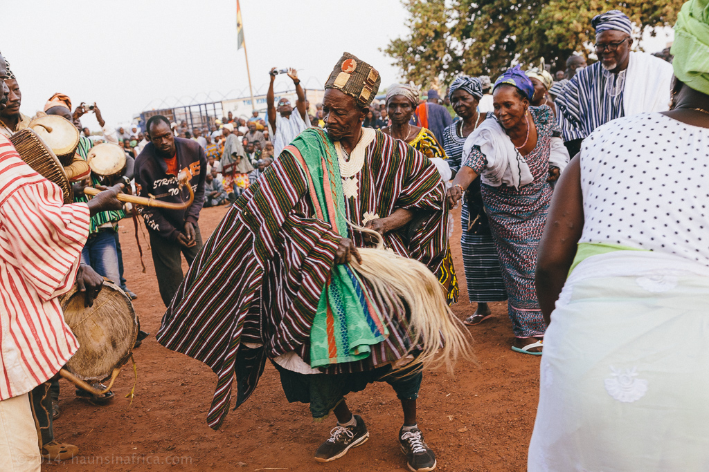

Open hours: Available 24/7
Here at TripsAfrica, we treat our clients to a 10 day fun-packed trip of exploring the most amazing parts of Northern Ghana. This is a good amount of time to explore and experience the rich northern culture. You will also have the opportunity to experience wildlife and nature of this beautiful country called Ghana

Upon arrival at the Terminal 3 of Kotoka International Airport, Accra-Ghana, You will be met by a staff and sent to your hotel.
Overnight in Accra
After breakfast, you will depart with the morning flight to Tamale. Upon arrival, you will be met by our team who will take you to a restaurant to have your breakfast. You will start your tour with a city tour of the Northern Capital, Tamale. Tamale is the biggest city in Northern Ghana. You will have a tour of the biggest open market in Northern Ghana, visiting interesting sections including abattoir( Animal slaughterhouse),grains shops, vegetables and voodoo section. You will have lunch and visit a Smock Weaving Centre for a short weaving workshop before departing to Bolga for your overnight.
After breakfast, you will start your tour with a visit to Karimenga Eco Village. Upon arrival, you will have a tour of this village and also enjoy a story telling from your local guide. Afterwards you will depart to Tongo, a small town near Bolga, Upper East Region Capital. Upon arrival, you will have a tour of the Tongo Whistling Rocks and Caves. Afterwards you will visit the chief palace of Tongo where you will have an encounter with the chief who has many wives. You can also visit the shrine of the village; Tengzung Shrine.
Return to Bolga afterwards for your overnight.
Depart after breakfast to Paga but make some detours. Your first stop will be to the Bolga Craft Market. Afterwards, you will continue to Pikworo Slave Camp. It was originally developed as a slave transit centre where slaves were auctioned and later resold. You will have a tour of this facility visiting some sections of the slave camp including the trees where the slaves were chained, their entertainment section and dugout rocks that served as their eating bowls. Continue to Paga Crocodile Pond to have an encounter with the friendly crocodile in the pond. You will have the opportunity to touch the crocodiles and take pictures.
Return to Bolga for your overnight.
Today, you will depart from the Upper East Region to the Upper West Region of Ghana. Your first stop will be to Sirigu Art Village. Sirigu Art Village is a cultural village where by the women of the village preserve their culture and arts through painting and basketry. After your tour of this fascinating village.
You will continue to Wa for your overnight.
After breakfast, you will depart to tour some attractions in the Upper West Region. You will make a stop at the Sankana Caves. The people of Sankana used to run into the large caves to hide from kidnappers and avoid being enslaved. Continue to Wuling to have a tour of the Mushroom Rocks and Ant Hills to have a view of this fascinating attractions.
Afterwards you will continue to your hotel for your overnight.
After breakfast, you will start your tour with a visit to the Wa Naa Palace(Chief of Wa). You will be told the history behind the culture of the locals. Continue to Nakore Mosque, an ancient mosque at the outskirts of Wa. This mosque has been built in the ancient Sudanese style. It has rectangular timber pillars supporting the structure.
Depart afterwards to Mole National Park for your overnight.
You will wake up in one of Ghana’s largest national park. Mole National Park is a protected area of about 4,840km² and provides one of the best wildlife experience in West Africa. The park is home to about Ninety-three(93) mammal species which includes; elephants, buffalo, warthogs. antelopes, and a variety of Monkeys. You will have breakfast and have the rest of the day to relax until your late afternoon drive safari within the park. Enjoy 2hours drive safari which will bring you up-close with some of the mammals within the park. After your safari, you can relax by the pool in your hotel.
Overnight in Mole National Park.
After a restful night, you will have an early morning walk safari within the park to come up close with mammals in the park. You will use this opportunity to make up for the species you missed during your drive safari. After your safari, you will have your breakfast and later depart to a nearby eco village, Mognori. You will have a tour of the village after which you will be treated to a canoe safari on the Mole River. Return back to Mole National Park making a detour to another ancient mosque, Larabanga Mosque. This mosque is regarded as the oldest mosque in Ghana.
Return to the park for your overnight.
Checkout from your hotel to depart to Tamale Airport for your onward flight to Accra. Upon arrival in Accra, you will be transferred to your location or the international departure hall to depart home.
End of tour.
Have you been on this tour before, please leave a comment describing your experience